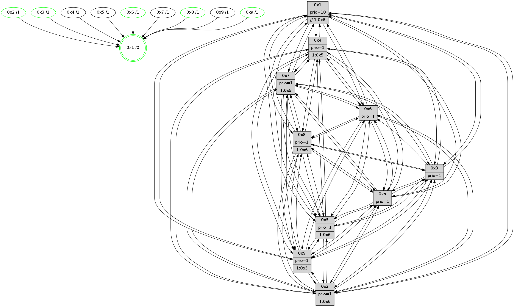

>> << IDX [start] -100 -25 -5 +0 +5 +25 +100 [1240.15860295]
 Previous packets
----------------------------------------------------------------------
1235.429818 beacon01(faad) #0 coord=01,02,03,04,05,06,07,0a,09,08 cycle=688.0ms assoc
-- color-indic=1 64 c5 fd
1235.439800 beacon02(faad) #0 coord=01,02,03,04,05,06,07,0a,09,08 cycle=688.0ms assoc 64 56 cc
1235.449801 beacon03(faad) #0 coord=01,02,03,04,05,06,07,0a,09,08 cycle=688.0ms assoc 64 2c 81
1235.459801 beacon04(faad) #0 coord=01,02,03,04,05,06,07,0a,09,08 cycle=688.0ms assoc 64 5b 6b
1235.469801 beacon05(faad) #0 coord=01,02,03,04,05,06,07,0a,09,08 cycle=688.0ms assoc 64 21 26
1235.479801 beacon06(faad) #0 coord=01,02,03,04,05,06,07,0a,09,08 cycle=688.0ms assoc 64 af f1
1235.489803 beacon07(faad) #0 coord=01,02,03,04,05,06,07,0a,09,08 cycle=688.0ms assoc 64 d5 bc
1235.499806 beacon0a(faad) #0 coord=01,02,03,04,05,06,07,0a,09,08 cycle=688.0ms assoc 64 a4 b7
1235.509808 beacon09(faad) #0 coord=01,02,03,04,05,06,07,0a,09,08 cycle=688.0ms assoc 64 2a 60
1235.519807 beacon08(faad) #0 coord=01,02,03,04,05,06,07,0a,09,08 cycle=688.0ms assoc 64 50 2d
1235.530779 [STC(2)->1 #0.198 tree-change,inconsistent-stability,stable,to-color d=1]
1235.532977 [STC(5)->1 #0.198 to-color d=1]
1235.534468 [Hello(4): seq=788 sym=5,7,6,2,3,9,8,10,1 sysInfo= stat=5:9,11,5,0/7:11,15,9,1/6:10,13,10,13/2:0,1,0,15/3:8,8,11,13/9:0,0,0,0/8:6,11,1,0/10:8,0,0,14/1:8,15,8,1]
1235.537804 [Hello(7): seq=788 sym=2,3,5,6,4,8,9,10,1 sysInfo=hasWarning stat=2:0,8,0,2/3:7,15,3,1/5:7,1,14,2/6:7,5,0,10/4:0,3,11,1/8:7,10,1,0/9:0,0,0,0/10:11,2,2,6/1:1,11,6,0]
1235.540503 [Hello(9): seq=732 sym=2,5,3,4,7,6,8,10,1 sysInfo=hasWarning stat=2:4,2,3,9/5:11,3,5,6/3:2,11,11,1/4:14,14,4,0/7:0,7,8,1/6:0,8,1,12/8:12,13,5,3/10:7,0,9,4/1:12,5,10,1]
1235.543697 [Hello(10): seq=721 sym=6,2,3,8,7,5,9,4,1 sysInfo=hasWarning stat=6:5,12,3,2/2:6,5,6,11/3:7,3,10,12/8:7,14,0,2/7:11,10,9,6/5:6,11,1,15/9:1,15,10,3/4:14,9,9,0/1:14,13,4,1]
1235.547315 [STC(9)->1 #0.198 tree-change,inconsistent-stability,to-color d=1]
1235.548971 [Hello(8): seq=732 sym=5,2,3,7,9,6,4,10,1 sysInfo=hasWarning stat=5:0,5,9,0/2:11,14,7,11/3:2,2,13,1/7:9,9,2,0/9:2,7,10,3/6:2,0,11,14/4:3,1,1,0/10:9,5,14,4/1:13,8,8,0]
1235.552884 [STC(10)->1 #0.198 tree-change,inconsistent-stability,stable,to-color d=1]
1235.555582 [Color(1) seq=469 @0:0 prio=10 >>1.@6,1.@7,1.@8]
1235.558287 [STC(3)->1 #0.198 tree-change,inconsistent-stability,stable,to-color d=1]
1235.560743 [STC(7)->1 #0.198 tree-change,inconsistent-stability,to-color d=1]
1235.562046 [STC(4)->1 #0.198 tree-change,inconsistent-stability,to-color d=1]
1235.567563 [STC(8)->1 #0.198 tree-change,inconsistent-stability,stable,to-color d=1]
1235.570485 [Color(8) seq=387 @0:0 prio=1 >1.@6,1.@7,1.@9,1.@a]
----------------------------------------------------------------------
1236.217948 beacon01(faad) #0 coord=01,02,03,04,05,06,07,0a,09,08 cycle=688.0ms assoc
-- color-indic=1 64 01 f3
1236.227931 beacon02(faad) #0 coord=01,02,03,04,05,06,07,0a,09,08 cycle=688.0ms assoc 64 92 c2
1236.237931 beacon03(faad) #0 coord=01,02,03,04,05,06,07,0a,09,08 cycle=688.0ms assoc 64 e8 8f
1236.247931 beacon04(faad) #0 coord=01,02,03,04,05,06,07,0a,09,08 cycle=688.0ms assoc 64 9f 65
1236.257932 beacon05(faad) #0 coord=01,02,03,04,05,06,07,0a,09,08 cycle=688.0ms assoc 64 e5 28
1236.267931 beacon06(faad) #0 coord=01,02,03,04,05,06,07,0a,09,08 cycle=688.0ms assoc 64 6b ff
1236.277931 beacon07(faad) #0 coord=01,02,03,04,05,06,07,0a,09,08 cycle=688.0ms assoc 64 11 b2
1236.287937 beacon0a(faad) #0 coord=01,02,03,04,05,06,07,0a,09,08 cycle=688.0ms assoc 64 60 b9
1236.307936 beacon08(faad) #0 coord=01,02,03,04,05,06,07,0a,09,08 cycle=688.0ms assoc 64 94 23
1236.319105 [Hello(5): seq=789 sym=7,6,4,3,1,9,8,10,2 sysInfo=hasWarning stat=7:3,11,15,13/6:4,12,11,3/4:2,4,7,13/3:7,6,9,15/1:13,6,7,0/9:3,15,5,9/8:15,4,4,2/10:13,11,5,8/2:2,10,8,7]
1236.322839 [Color(10) seq=378 @0:0 prio=1]
1236.324696 [Hello(2): seq=785 sym=4,5,7,6,3,9,8,10,1 sysInfo=hasWarning stat=4:11,9,14,11/5:2,9,1,1/7:4,5,15,14/6:6,11,1,1/3:10,15,0,10/9:11,10,7,8/8:8,14,13,11/10:14,2,7,10/1:14,11,3,0]
1236.328306 [Hello(6): seq=789 sym=2,5,4,7,9,8,10,1 sysInfo=hasWarning stat=2:9,12,3,0/5:3,2,6,2/4:9,13,3,5/7:3,7,14,12/9:7,15,12,9/8:3,4,7,5/10:13,0,9,12/1:13,8,8,1]
1236.332084 [Hello(3): seq=789 sym=1,7,6,2,4,8,9,10,5 sysInfo=hasWarning stat=1:13,12,8,0/7:4,8,5,12/6:8,14,0,0/2:5,14,6,0/4:3,4,8,11/8:12,12,2,4/9:4,8,10,15/10:6,3,1,4/5:0,0,14,0]
1236.335933 [Hello(1): seq=698 sym=4,2,9,5,10,3,8,6,7 sysInfo=coloring-mode-on,ColoringModeRequestCalled stat=4:13,15,4,0/2:2,9,11,3/9:15,0,2,0/5:5,10,4,7/10:7,0,1,7/3:9,13,9,8/8:9,14,2,0/6:6,15,13,15/7:8,6,7,14]
1236.339498 [Color(3) seq=418 @0:0 prio=1]
1236.341819 [Color(2) seq=365 @0:0 prio=1 >1.@6,1.@7,1.@8,1.@9]
1236.352348 [Color(6) seq=421 @0:0 prio=1]
----------------------------------------------------------------------
1237.006077 beacon01(faad) #0 coord=01,02,03,04,05,06,07,0a,09,08 cycle=688.0ms assoc
-- color-indic=1 64 bd f6
1237.016060 beacon02(faad) #0 coord=01,02,03,04,05,06,07,0a,09,08 cycle=688.0ms assoc 64 2e c7
1237.026060 beacon03(faad) #0 coord=01,02,03,04,05,06,07,0a,09,08 cycle=688.0ms assoc 64 54 8a
1237.036061 beacon04(faad) #0 coord=01,02,03,04,05,06,07,0a,09,08 cycle=688.0ms assoc 64 23 60
1237.046060 beacon05(faad) #0 coord=01,02,03,04,05,06,07,0a,09,08 cycle=688.0ms assoc 64 59 2d
1237.056061 beacon06(faad) #0 coord=01,02,03,04,05,06,07,0a,09,08 cycle=688.0ms assoc 64 d7 fa
1237.066061 beacon07(faad) #0 coord=01,02,03,04,05,06,07,0a,09,08 cycle=688.0ms assoc 64 ad b7
1237.076064 beacon0a(faad) #0 coord=01,02,03,04,05,06,07,0a,09,08 cycle=688.0ms assoc 64 dc bc
1237.086065 beacon09(faad) #0 coord=01,02,03,04,05,06,07,0a,09,08 cycle=688.0ms assoc 64 52 6b
1237.096066 beacon08(faad) #0 coord=01,02,03,04,05,06,07,0a,09,08 cycle=688.0ms assoc 64 28 26
1237.107300 [Hello(10): seq=722 sym=6,2,3,8,7,5,9,4,1 sysInfo=hasWarning stat=6:6,13,3,2/2:7,6,7,11/3:8,4,11,12/8:7,15,1,2/7:11,10,10,6/5:7,11,1,15/9:1,15,10,3/4:14,9,10,0/1:15,14,4,1]
1237.109896 [Hello(7): seq=789 sym=2,3,5,6,4,8,9,10,1 sysInfo=hasWarning stat=2:1,9,1,2/3:8,0,3,1/5:8,1,14,2/6:8,6,0,10/4:0,3,12,1/8:7,11,2,0/9:0,0,0,0/10:11,3,2,6/1:2,11,6,0]
1237.112934 [Hello(8): seq=733 sym=5,2,3,7,9,6,4,10,1 sysInfo=hasWarning stat=5:1,5,10,0/2:12,15,8,11/3:3,3,13,1/7:9,9,2,0/9:2,7,10,3/6:3,1,11,14/4:4,1,1,0/10:9,6,14,4/1:14,8,8,0]
1237.117224 [Color(1) seq=470 @0:0 prio=10 >>1.@6,1.@7,1.@8]
1237.119486 [Hello(9): seq=733 sym=2,5,3,4,7,6,8,10,1 sysInfo=hasWarning stat=2:5,3,4,9/5:12,3,5,6/3:3,12,12,1/4:14,14,5,0/7:0,7,9,1/6:1,9,1,12/8:13,14,6,3/10:7,1,10,4/1:13,6,10,1]
1237.122611 [Color(8) seq=388 @0:0 prio=1 >1.@6,1.@7,1.@9,1.@a]
1237.124591 [Hello(4): seq=789 sym=5,7,6,2,3,9,8,10,1 sysInfo= stat=5:10,11,5,0/7:11,15,9,1/6:11,14,10,13/2:1,2,1,15/3:9,9,11,13/9:0,0,0,0/8:6,12,2,0/10:8,1,0,14/1:9,15,8,1]
----------------------------------------------------------------------
1237.794209 beacon01(faad) #0 coord=01,02,03,04,05,06,07,0a,09,08 cycle=688.0ms assoc
-- color-indic=1 64 89 ee
1237.804193 beacon02(faad) #0 coord=01,02,03,04,05,06,07,0a,09,08 cycle=688.0ms assoc 64 1a df
1237.814192 beacon03(faad) #0 coord=01,02,03,04,05,06,07,0a,09,08 cycle=688.0ms assoc 64 60 92
1237.824192 beacon04(faad) #0 coord=01,02,03,04,05,06,07,0a,09,08 cycle=688.0ms assoc 64 17 78
1237.834191 beacon05(faad) #0 coord=01,02,03,04,05,06,07,0a,09,08 cycle=688.0ms assoc 64 6d 35
1237.844192 beacon06(faad) #0 coord=01,02,03,04,05,06,07,0a,09,08 cycle=688.0ms assoc 64 e3 e2
1237.854191 beacon07(faad) #0 coord=01,02,03,04,05,06,07,0a,09,08 cycle=688.0ms assoc 64 99 af
1237.864198 beacon0a(faad) #0 coord=01,02,03,04,05,06,07,0a,09,08 cycle=688.0ms assoc 64 e8 a4
1237.874197 beacon09(faad) #0 coord=01,02,03,04,05,06,07,0a,09,08 cycle=688.0ms assoc 64 66 73
1237.884199 beacon08(faad) #0 coord=01,02,03,04,05,06,07,0a,09,08 cycle=688.0ms assoc 64 1c 3e
1237.896000 [Hello(5): seq=790 sym=7,6,4,3,1,9,8,10,2 sysInfo=hasWarning stat=7:4,11,15,13/6:5,13,11,3/4:3,4,7,13/3:8,7,9,15/1:14,7,7,0/9:4,15,5,9/8:0,5,4,2/10:14,12,5,8/2:3,11,8,7]
1237.899674 [Hello(2): seq=786 sym=4,5,7,6,3,9,8,10,1 sysInfo=hasWarning stat=4:12,9,14,11/5:3,9,1,1/7:5,5,15,14/6:6,12,1,1/3:10,15,0,10/9:12,10,7,8/8:9,15,13,11/10:15,2,7,10/1:14,12,3,0]
1237.902763 [Color(10) seq=379 @0:0 prio=1]
1237.906057 [Hello(6): seq=790 sym=2,5,4,7,9,8,10,1 sysInfo=hasWarning stat=2:9,12,3,0/5:4,2,6,2/4:10,13,3,5/7:4,7,14,12/9:8,15,12,9/8:4,5,7,5/10:14,1,9,12/1:13,9,8,1]
1237.909089 [Color(6) seq=422 @0:0 prio=1]
1237.910748 [Color(2) seq=366 @0:0 prio=1 >1.@6,1.@7,1.@8,1.@9]
1237.917120 [Hello(1): seq=699 sym=4,2,9,5,10,3,8,6,7 sysInfo=coloring-mode-on,ColoringModeRequestCalled stat=4:14,15,4,0/2:2,10,11,3/9:0,0,2,0/5:5,10,4,7/10:8,0,1,7/3:9,14,9,8/8:9,15,2,0/6:6,0,13,15/7:9,6,7,14]
1237.919690 [Hello(3): seq=790 sym=1,7,6,2,4,8,9,10,5 sysInfo=hasWarning stat=1:13,13,8,0/7:5,8,5,12/6:8,15,0,0/2:5,15,6,0/4:4,4,8,11/8:13,13,2,4/9:5,8,10,15/10:7,3,1,4/5:1,0,14,0]
1237.922829 [Color(3) seq=419 @0:0 prio=1]
----------------------------------------------------------------------
1238.582341 beacon01(faad) #0 coord=01,02,03,04,05,06,07,0a,09,08 cycle=688.0ms assoc
-- color-indic=1 64 35 eb
1238.592324 beacon02(faad) #0 coord=01,02,03,04,05,06,07,0a,09,08 cycle=688.0ms assoc 64 a6 da
1238.602325 beacon03(faad) #0 coord=01,02,03,04,05,06,07,0a,09,08 cycle=688.0ms assoc 64 dc 97
1238.612323 beacon04(faad) #0 coord=01,02,03,04,05,06,07,0a,09,08 cycle=688.0ms assoc 64 ab 7d
1238.622324 beacon05(faad) #0 coord=01,02,03,04,05,06,07,0a,09,08 cycle=688.0ms assoc 64 d1 30
1238.632326 beacon06(faad) #0 coord=01,02,03,04,05,06,07,0a,09,08 cycle=688.0ms assoc 64 5f e7
1238.642326 beacon07(faad) #0 coord=01,02,03,04,05,06,07,0a,09,08 cycle=688.0ms assoc 64 25 aa
1238.652329 beacon0a(faad) #0 coord=01,02,03,04,05,06,07,0a,09,08 cycle=688.0ms assoc 64 54 a1
1238.662328 beacon09(faad) #0 coord=01,02,03,04,05,06,07,0a,09,08 cycle=688.0ms assoc 64 da 76
1238.672329 beacon08(faad) #0 coord=01,02,03,04,05,06,07,0a,09,08 cycle=688.0ms assoc 64 a0 3b
1238.683821 [Hello(4): seq=790 sym=5,7,6,2,3,9,8,10,1 sysInfo= stat=5:11,11,5,0/7:11,15,9,1/6:12,15,10,13/2:2,3,1,15/3:10,10,11,13/9:0,0,0,0/8:6,12,2,0/10:8,2,0,14/1:10,15,8,1]
1238.687476 [Hello(7): seq=790 sym=2,3,5,6,4,8,9,10,1 sysInfo=hasWarning stat=2:2,10,1,2/3:9,1,3,1/5:9,1,14,2/6:9,7,0,10/4:1,3,12,1/8:8,12,2,0/9:1,0,0,0/10:11,4,2,6/1:3,12,6,0]
1238.690793 [Hello(9): seq=734 sym=2,5,3,4,7,6,8,10,1 sysInfo=hasWarning stat=2:6,4,4,9/5:13,3,5,6/3:4,13,12,1/4:15,14,5,0/7:0,7,9,1/6:2,10,1,12/8:13,15,6,3/10:7,2,10,4/1:14,6,10,1]
1238.696677 [Color(8) seq=389 @0:0 prio=1 >1.@6,1.@7,1.@9,1.@a]
1238.698554 [Hello(10): seq=723 sym=6,2,3,8,7,5,9,4,1 sysInfo=hasWarning stat=6:7,14,3,2/2:7,7,7,11/3:9,5,11,12/8:8,0,1,2/7:12,10,10,6/5:8,11,1,15/9:2,15,10,3/4:15,9,10,0/1:0,15,4,1]
1238.705729 [STC(1) #0.199 tree-change,inconsistent-stability,stable,to-color d=0]
1238.708338 [Color(1) seq=471 @0:0 prio=10 >>1.@6,1.@7,1.@8]
----------------------------------------------------------------------
1239.370473 beacon01(faad) #0 coord=01,02,03,04,05,06,07,0a,09,08 cycle=688.0ms assoc
-- color-indic=1 64 f1 e5
1239.380454 beacon02(faad) #0 coord=01,02,03,04,05,06,07,0a,09,08 cycle=688.0ms assoc 64 62 d4
1239.390454 beacon03(faad) #0 coord=01,02,03,04,05,06,07,0a,09,08 cycle=688.0ms assoc 64 18 99
1239.400458 beacon04(faad) #0 coord=01,02,03,04,05,06,07,0a,09,08 cycle=688.0ms assoc 64 6f 73
1239.410458 beacon05(faad) #0 coord=01,02,03,04,05,06,07,0a,09,08 cycle=688.0ms assoc 64 15 3e
1239.420455 beacon06(faad) #0 coord=01,02,03,04,05,06,07,0a,09,08 cycle=688.0ms assoc 64 9b e9
1239.430456 beacon07(faad) #0 coord=01,02,03,04,05,06,07,0a,09,08 cycle=688.0ms assoc 64 e1 a4
1239.440461 beacon0a(faad) #0 coord=01,02,03,04,05,06,07,0a,09,08 cycle=688.0ms assoc 64 90 af
1239.450460 beacon09(faad) #0 coord=01,02,03,04,05,06,07,0a,09,08 cycle=688.0ms assoc 64 1e 78
1239.460461 beacon08(faad) #0 coord=01,02,03,04,05,06,07,0a,09,08 cycle=688.0ms assoc 64 64 35
1239.472674 [STC(8)->1 #0.199 tree-change,inconsistent-stability,stable,to-color d=1]
1239.475237 [Hello(5): seq=791 sym=7,6,4,3,1,9,8,10,2 sysInfo=hasWarning stat=7:5,11,15,13/6:6,14,11,3/4:4,4,7,13/3:9,8,9,15/1:15,8,8,0/9:5,15,5,9/8:0,6,4,2/10:15,13,5,8/2:4,12,8,7]
1239.478047 [STC(5)->1 #0.199 tree-change,inconsistent-stability,to-color d=1]
1239.479709 [TreeStatus(8)-.->1 #0.199 tree-change,inconsistent-stability,stable child=1]
1239.481298 [Hello(3): seq=791 sym=1,7,6,2,4,8,9,10,5 sysInfo=hasWarning stat=1:13,14,9,0/7:6,8,5,12/6:8,15,0,0/2:5,15,6,0/4:5,4,8,11/8:13,14,2,4/9:6,8,10,15/10:8,3,1,4/5:2,0,14,0]
1239.484103 [STC(10)->1 #0.199 tree-change,inconsistent-stability,stable,to-color d=1]
1239.491631 [Color(10) seq=380 @0:0 prio=1]
1239.493990 [STC(6)->1 #0.199 tree-change,inconsistent-stability,stable,to-color d=1]
1239.496925 [Color(6) seq=423 @0:0 prio=1]
1239.501225 [Hello(2): seq=787 sym=4,5,7,6,3,9,8,10,1 sysInfo=hasWarning stat=4:13,9,14,11/5:4,9,1,1/7:6,5,15,14/6:6,12,1,1/3:11,0,0,10/9:13,10,7,8/8:9,0,13,11/10:0,2,7,10/1:15,13,4,0]
1239.504368 [STC(2)->1 #0.199 tree-change,inconsistent-stability,stable,to-color d=1]
1239.506950 [Color(2) seq=367 @0:0 prio=1 >1.@6,1.@7,1.@8,1.@9]